This tutorial shows how to use the Camel debugger for only
a locally running routing context. The routing
context and each node with a breakpoint set must have a unique ID. The tooling
automatically assigns a unique ID to the camelContext
element and to components and patterns dropped on the canvas, but you can change
these IDs to customize your project.
In this tutorial you will:
In Design view, set breakpoints on the nodes of interest in Route1
Switch to Route2, and set breakpoints on the nodes of interest
Invoke the Camel debugger
Step through the route, examining route and message variables as they change
Step through the route again, changing the value of message variables and observing the effects
To complete this tutorial you will need the CBRroute project you updated in To Add Another Route to the CBR Routing Context.
![[Note]](imagesdb/note.png) | Note |
|---|---|
If you skipped any tutorial after To Create a New Route you can
use the prefabricated |
You can set both conditional and unconditional breakpoints, but in this tutorial, you will set unconditional breakpoints only.
If necessary, open your
CBRroute/src/main/resources/OSGI-INF/blueprint/blueprint.xmlin the route editor.In Project Explorer, expand
Camel Contexts/src/main/resources/OSGI-INF/blueprintto expose both route entries.Double-click the Route_route1 entry to switch focus to Route_route1 in Design view.
On the canvas, select the Choice_choice1 node, and then click its
 icon to set an unconditional breakpoint: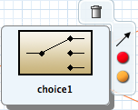
icon to set an unconditional breakpoint: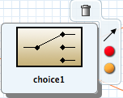 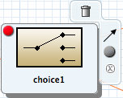
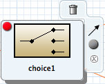Note In the route editor, you can disable or delete a specific breakpoint by clicking the node's
 icon or its
icon or its  icon, respectively. You can delete all set breakpoints
by right-clicking the canvas and selecting Delete all
breakpoints.
icon, respectively. You can delete all set breakpoints
by right-clicking the canvas and selecting Delete all
breakpoints. Repeat Step 4 to set an unconditional breakpoint on the following Route_Route1 nodes:
Log_log1
SetHeader_setHeader1
To_Invalid
Log_log2
SetHeader_setHeader2
To_Fulfill
In Project Explorer, double-click Route_route2 under
src/main/resources/OSGI-INF/blueprintto open Route_route2 on the canvas.Repeat Step 4 to set an unconditional breakpoint on the following Route_Route2 nodes:
Choice_choice2
SetHeader_setHead_usa
Log_usa
To_US
SetHeader_setHead_uk
Log_uk
To_UK
SetHeader_setHead_ger
Log_ger
To_GER
SetHeader_setHead_fr
Log_fr
To_FR
You can step through the routing context in two ways:
Step over (
 )—Jumps to the next node of execution in the
routing context, regardless of breakpoints.
)—Jumps to the next node of execution in the
routing context, regardless of breakpoints.Resume (
 )—Jumps to the next active breakpoint in the
routing context.
)—Jumps to the next active breakpoint in the
routing context.
| Note |
|---|---|
You can temporarily narrow then later re-expand the debugger's focus by disabling
and re-enabling the breakpoints you set in the routing context. This enables you,
for example, to focus on problematic nodes in your routing context. To do so, open
the Breakpoints tab and clear the check box of each breakpoint
you want to temporarily disable. Then use |
In Project Explorer, expand the root node to expose the
blueprint.xmlfile in the Camel Contexts folder.Right-click the
blueprint.xmlfile to open its context menu, and then click > .The Camel debugger suspends execution at the first breakpoint it encounters and asks whether you want to open Debug perspective now:
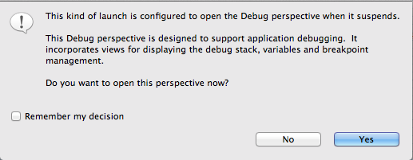Click .
Note If you click , the confirmation pane appears several more times. After the third refusal, it disappears, and the Camel debugger resumes execution. To interact with the debugger at this point, you need to open the Debug perspective by clicking > > .
Debug perspective opens with the routing context suspended at
_choice1 in Route1 [blueprint.xml]as shown in Debug view: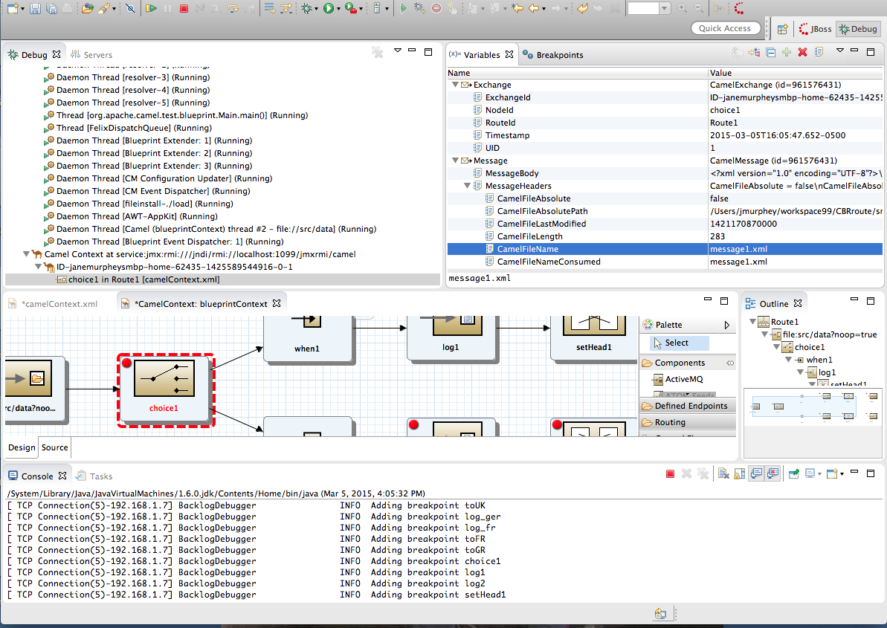 Note Breakpoints are held for a maximum of five minutes before the debugger automatically resumes, moving on to the next breakpoint or to the end of the routing context, whichever comes next.
In Variables view, expand the nodes to expose the variables and values available for each node.
As you step through the routing context, the variables whose values have changed since the last breakpoint are highlighted in yellow. You may need to expand the nodes at each breakpoint to reveal variables that have changed.
Click
to step to the next breakpoint, _log2 in Route1 [blueprint.xml]: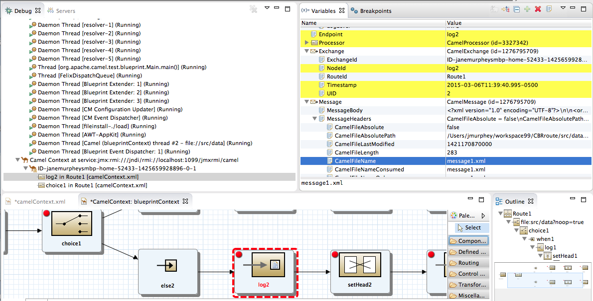 Expand the nodes in Variables view to examine the variables that have changed since the last breakpoint at
_choice1 in Route1 [blueprintxt.xml].Click
to step to the next breakpoint, _setHeader2 in Route1 [blueprint.xml].Examine the variables that changed since the breakpoint at
_log2 in Route1 [blueprint.xml].In Debug view, click
_log2 in Route1 [blueprint.xml]to populate Variables view with the variable values from the breakpoint_log2 in Route1 [blueprint.xml]for a quick comparison.In Debug view, you can switch between breakpoints within the same message flow to quickly compare and monitor changing variable values in Variables view.
Note Message flows can vary in length. For messages that transit the
InvalidOrdersbranch of Route_route1, the message flow is short. For messages that transit theValidOrdersbranch of Route_route1, which continues on to Route_route2, the message flow is longer.Continue stepping through the routing context. When one message completes the routing context and the next message enters it, the new message flow appears in Debug view, tagged with a new breadcrumb ID:
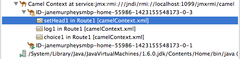 In this case,
ID-janemurpheysmbp-home-55846-1471374645179-0-3identifies the second message flow, corresponding tomessage2.xmlhaving entered the routing context. Breadcrumb IDs are incremented by 2.Note Exchange and Message IDs are identical and remain unchanged throughout a message's passage through the routing context. Their IDs are constructed from the message flow's breadcrumb ID, and incremented by 1. So, in the case of
message2.xml, itsExchangeIdandMessageIdareID-janemurpheysmbp-home-55846-1471374645179-0-4.When
message3.xmlenters the breakpoint_choice1 in Route_route1 [blueprint.xml], examine the Processor variables. The values displayed are the metrics accumulated formessage1.xmlandmessage2.xml, which previously transited the routing context: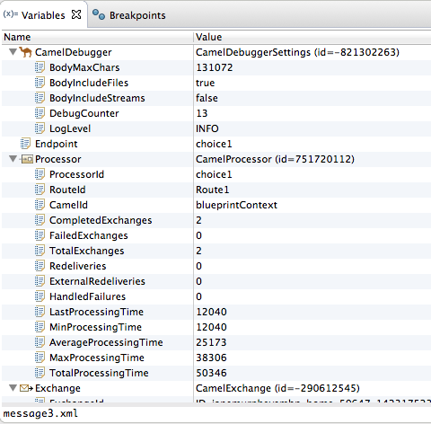 Timing metrics are in milliseconds.
Continue stepping each message through the routing context, examining variables and console output at each processing step. When
message6.xmlenters the breakpointTo_GER in Route2 [blueprint.xml], the debugger begins shutting down the breadcrumb threads.In the Menu bar, click to terminate the Camel debugger. This will cause the Console to terminate, but you will have to manually clear the output.
Note With a thread or endpoint selected under the Camel Context node in Debug view, you need to click twice—first to terminate the thread or endpoint and second to terminate the Camel Context, thus the session.
In the Menu bar, right-click 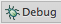 to open the context menu, and then select to close Debug perspective.
Doing so automatically returns you to perspective from which you launched the Camel debugger.
In Project Explorer, open the project's context menu, and select to refresh the display.
Note If you terminated the session prematurely, before all messages transited the routing context, you might see, under the
CBRroute/src/datafolder, a message like this:message3.xml.camelLock. You need to remove it before you run the debugger on the project again. To do so, double-click the.camelLockmessage to open its context menu, and then select . When asked, click to confirm deletion.Expand the
CBRroute/target/messages/* directories to check that the messages were delivered to their expected destinations:
Leave the routing context as is, with all previous breakpoints set and enabled.
In this session, you will add variables to a watch list to easily check how their values change as messages pass through the routing context. You will also change the value of a variable in the body of two messages and observe how the change affects each message's route through the routing context.
Follow Step 1 through Step 3 in Stepping through the CBRroute routing context to rerun the Camel debugger on the CBRroute project.
With message1 stopped at the first breakpoint,
_choice1 in Route1 [blueprint.xml], add the variables NodeId and RouteId (in the Exchange category) and MessageBody and CamelFileName (in the Message category) to the watch list.For each of the four variables:
In Variables view, expand the appropriate category to expose the target variable:
Right-click the variable (in this case, NodeId in the Exchange category) to open the context menu and select :
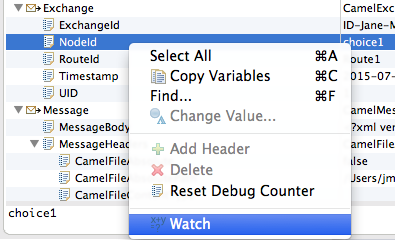The Expressions tab opens, listing the variable you selected to watch:
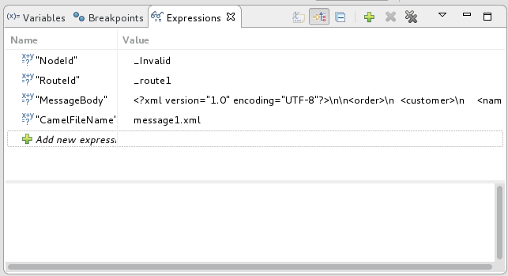Repeat Step 2.b for each of the three remaining variables.
Switch back to Variables view.
Step message1 through the routing context until it reaches the fourth breakpoint,
_Fulfill in Route1 [blueprint.xml].In Variables view, expand the Message category.
Repeat Step 2.b to add the variable Destination to the watch list.
Expressions view should now contain these variables:
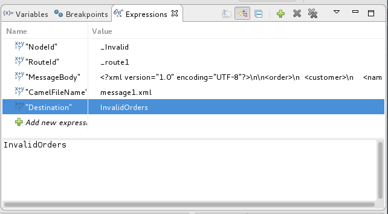Note The pane below the list of variables displays the value of the selected variable.
Note Expressions view retains all variables you add to the list until you explicitly remove them.
Step message1 through the rest of the routing context.
Stop message2 at
_choice1 in Route1 [blueprint.xml].In Variables view, expand the Message category to expose the MessageBody variable.
Right-click MessageBody to open its context menu, and select :
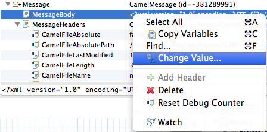Change the value of quantity from
3to2: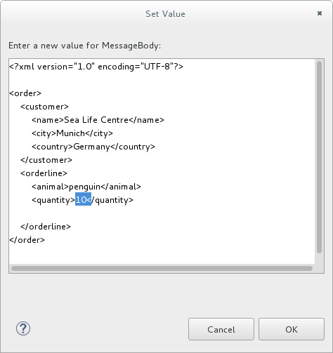This changes the in-memory value only.
Click .
Switch to Expressions view, and select the MessageBody variable.
The pane below the list of variables displays the entire body of message2, making it easy to check the current value of order items:
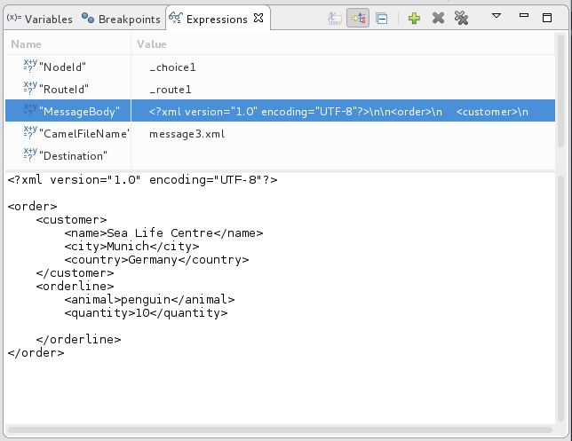Note Creating a watch list makes it easy for you to quickly check the current value of multiple variables of interest.
Click
to step to the next breakpoint.Instead of following the branch leading to To_Invalid, message2 now follows the branch leading toTo_Fulfill and Route_route2:
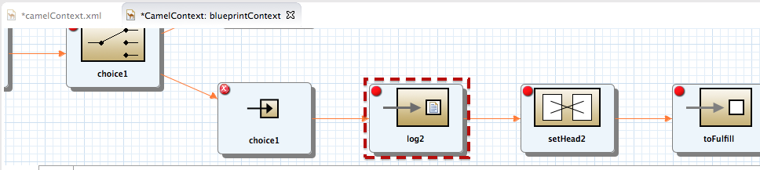Step message2 through the routing context, checking Debug view, Variables view, and Console output at each step.
Stop message3 at
_choice1 in Route1 [blueprint.xml].Switch to Breakpoints view, and disable all breakpoints (13) listed below
_choice1: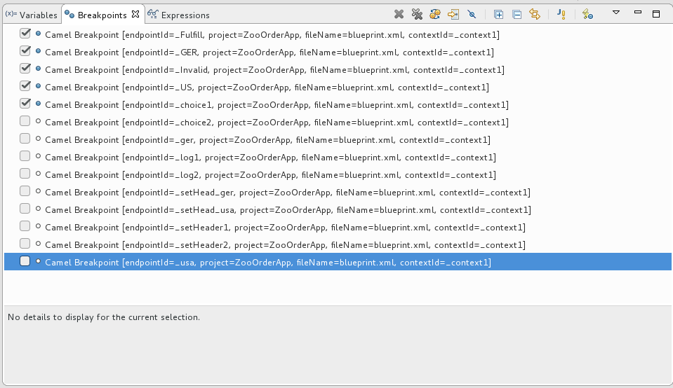Click
to step to the next breakpoint: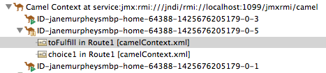The debugger jumps to
_FulFill in Route1 [blueprint.xml].Click
again to step to the next breakpoint: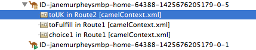The debugger jumps to
_UK in Route2 [blueprint.xml].In Breakpoints view, and re-enable all disabled breakpoints.
Switch back to Variables view.
Click
to step to the next breakpoint, and stop message4 at
_choice1 in Route1 [blueprint.xml].Right-click MessageBody to open its context menu, and select Change Value....
Change the value of quantity from
5to4: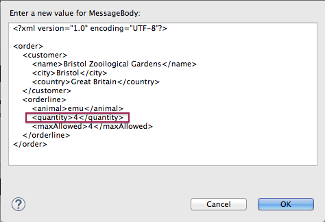Click .
Switch to Expressions view, and select the MessageBody variable to check the value of quantity in the body of message4.
Repeat Step 13 and Step 14 to step message4 through the routing context.
Click
repeatedly to quickly step message5 and message6 through
the routing context.In the tool bar, click to terminate the Camel debugger:
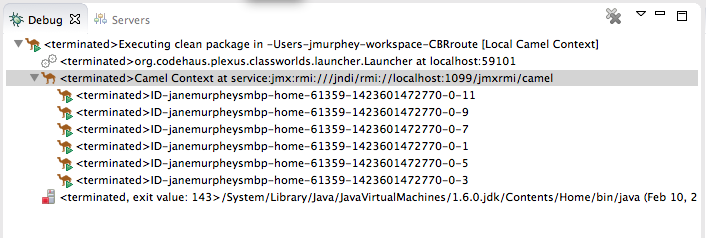This will also cause the Console to terminate, but you will have to click its
 button to clear the output.
button to clear the output.In the Menu bar, right-click to open the context menu, and then select to close Debug perspective.
Doing so automatically returns you to the perspective from which you launched the Camel debugger.
In Project Explorer, open the project's context menu, and select to refresh the display.
Expand the
CBRroute/target/messages/* directories to check whether the messages were delivered as expected: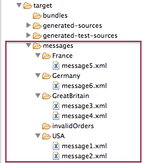You should see that no messages were sent to the
invalidOrders. Instead,message2.xmlshould appear in theUSAfolder, andmessage4.xmlshould appear theGreatBritainfolder.
Next you will trace messages through your routing context to see where you can optimize and fine tune your routing context's performance, as described in To Trace a Message Through a Route.